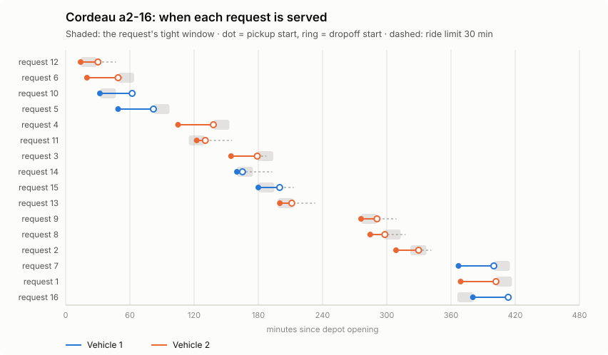

OPTIMAL?
«Оптимально» без доказательства"Optimal" without proof
Статус ставит сам решатель. Независимо от него план никто не пересчитывает.The solver labels its own answer. Nobody recomputes the plan independently.
VRPTWPDPTWDARPсмешанный паркmixed fleetPython + Rust
Движок маршрутизации для смешанного парка: свои и наёмные машины, вес, объём и паллеты, окна, забор и доставка, заявки в реальном времени. ALNS на ядре Rust, точные модели CP-SAT и MIP, сравнение с OR-Tools — и независимая проверка, которая либо подтверждает план, либо называет, сколько минут ему не хватает.A routing engine for a mixed fleet: own and hired vehicles, weight, volume and pallets, time windows, pickup and delivery, orders arriving live. ALNS on a Rust kernel, exact CP-SAT and MIP models, a head-to-head with OR-Tools, and an independent check that either confirms a plan or tells you how many minutes it is short.
ПроблемаThe problem
Сотни заказов, у каждого — окно времени, лимит в пути, требования к машине и водителю. Ошибку в таком плане не видно глазами, а стоит она рейсов, штрафов и доверия клиента.Hundreds of orders, each with a time window, a ride limit, vehicle and driver requirements. You cannot see an error in such a plan, and it costs trips, penalties and customer trust.
Это не гипотеза: аудит нашёл дефект в этом самом ядре. Расписание «как можно раньше» не умело подождать у подъезда, и пассажир не укладывался в лимит поездки. Переключите режим.Not a hypothesis: an audit found it in this very kernel. An as-early-as-possible schedule could not wait at the curb, so the passenger broke the ride limit. Flip the switch.
9 / 16 обслуженоserved
Эталон Cordeau a2-16, жадная вставка. Ужатие окон (Dumas, Desrosiers, Soumis, 1991) следует из самих ограничений: начало подачи ≥ самое раннее время высадки − лимит поездки − посадка.Cordeau a2-16, greedy insertion. Window tightening (Dumas, Desrosiers, Soumis, 1991) follows from the constraints: pickup start ≥ earliest dropoff − ride limit − boarding.
OPTIMAL?
Статус ставит сам решатель. Независимо от него план никто не пересчитывает.The solver labels its own answer. Nobody recomputes the plan independently.
INFEASIBLE
Логист не знает, что менять: окно, машину или обещание клиенту.The planner does not know what to change: a window, a vehicle or a promise.
47.9 s
Отмена, пробка, поломка — а пересчёт дня идёт дольше, чем звонок диспетчеру.A cancellation, traffic, a breakdown, and re-planning takes longer than the call to the dispatcher.
Почему это сложноWhy it is hard
4 × 1030
32 остановки, забор раньше доставки: 32! / 2¹⁶. Это в десять триллионов раз больше, чем секунд прошло от Большого взрыва. Окна, лимит поездки и вместимость оставляют от этого пространства узкую щель — поэтому нужны и быстрые эвристики, и точные модели, и проверка, которая не доверяет ни тем, ни другим.32 stops, pickup before delivery: 32! / 2¹⁶. Ten trillion times the number of seconds since the Big Bang. Windows, ride limits and capacity leave a thin slit of that space, so you need fast heuristics, exact models, and a check that trusts neither.
РешениеThe solution
01 · СкоростьSpeed
Вставка с префиксным состоянием на Rust (PyO3, rayon). Профилирование показало: узким местом был не Rust, а Python вокруг него — 56% времени уходило в одну функцию.Prefix-state insertion in Rust (PyO3, rayon). Profiling showed the bottleneck was not Rust but the Python around it: 56% of the time went into one function.
02 · ТочностьExactness
Точная модель воспроизводит опубликованный оптимум до сотых. Та же постановка решается как MIP на SCIP, HiGHS и CBC, с LP-границей.The exact model reproduces the published optimum to 0.01. The same formulation runs as a MIP on SCIP, HiGHS and CBC, with an LP bound.
03 · ДоказательствоProof
Расписание маршрута — система разностных неравенств. Она выполнима тогда и только тогда, когда в графе ограничений нет отрицательного цикла. Проверяет алгоритм Беллмана–Форда, отдельным кодом.A route schedule is a system of difference constraints. It is feasible iff the constraint graph has no negative cycle. Bellman–Ford checks it, in separate code.
04 · ОбъяснениеExplanation
Отрицательный цикл и есть сертификат: он называет конфликтующие ограничения, а его вес — дефицит времени. Объяснение формируется по-русски и по-английски.The negative cycle is the certificate: it names the conflicting constraints, and its weight is the missing time. The explanation comes in Russian and English.
Маршрут 2 невыполним при любом расписании: не хватает 358.68 мин. подача 12 — начало не позже 29; заявка 12 в пути не дольше 30 мин; высадка 1 — начало не раньше 402; высадка 1 → высадка 12: 3 + 15.68 мин.Route 2 cannot be timed: short by 358.68 min. pickup 12 must start by 29; request 12 may ride at most 30 min; dropoff 1 cannot start before 402; dropoff 1 → dropoff 12 takes 3 + 15.68 min.
Заказы, парк, водители, матрица времени. Строгая валидация.Orders, fleet, drivers, travel matrix. Strict validation.
Жадная вставка, beam, ALNS, скользящий горизонт.Greedy insertion, beam, ALNS, rolling horizon.
CP-SAT, MIP на SCIP / HiGHS / CBC, LP-релаксация.CP-SAT, MIP on SCIP / HiGHS / CBC, LP relaxation.
Независимая проверка каждого маршрута.Independent check of every route.
План с отпечатками входа — или сертификат отказа.A plan with input fingerprints, or a refusal certificate.
Смешанный паркMixed fleet
Один городской день: два склада, фургоны 1,5 т, грузовики 5 и 10 т, тягач 20 т, свои и наёмные. У заказа — вес, объём и паллеты, окно доставки, рефрижератор, гидроборт или ДОПОГ. Добавляйте заказы: решатель сам выбирает, какие машины выпустить и кого нанять.One city day: two depots, 1.5-t vans, 5-t and 10-t trucks, a 20-t tractor, own and hired. Each order has weight, volume and pallets, a delivery window, and may need refrigeration, a tail lift or ADR. Add orders: the solver decides which vehicles go out and whom to hire.
Стоимость: своя машина — только пробег и часы (машина и водитель оплачены в любом случае); наёмная — плата за выход и тариф на 35% выше. Каждый план проверен независимым верификатором. Данные синтетические.Cost: an own vehicle costs mileage and hours only (truck and driver are paid for anyway); a hired one costs a hire fee and a 35% higher tariff. Every plan is checked by the independent verifier. Synthetic data.
Живая диспетчеризацияLive dispatch
Смена внутризаводской логистики: перевозки паллет между цехами появляются в течение дня. Каждая получает ответ сразу — вставку в ту часть плана, которую машина ещё не проехала, или отказ с причиной. Раз в 30 минут живое состояние переоптимизируется ALNS.A shift of in-plant logistics: pallet moves between workshops appear during the day. Each gets an answer at once: an insertion into the part of a plan the vehicle has not driven yet, or a refusal with the reason. Every 30 minutes the live state is re-optimised by ALNS.
| ПолитикаPolicy | ПринятоAccepted | ПодачаTo pickup | РешениеDecision |
|---|
ЭталоныBenchmarks
Solomon (VRPTW), Li & Lim и Sartori–Buriol (PDPTW на реальных дорожных временах OSRM), Cordeau (DARP). Клетка — один инстанс: цвет показывает разрыв к лучшему известному решению при том же числе машин. Наведите или нажмите.Solomon (VRPTW), Li & Lim and Sartori–Buriol (PDPTW on real OSRM road times), Cordeau (DARP). One cell, one instance: colour is the gap to the best known solution at the same vehicle count. Hover or tap.
Точная модель — судьяThe exact model judges
OR-Tools Routing, равное времяOR-Tools Routing, equal time
Профилирование → RustProfiling → Rust
ДоказательстваProof
Эталон Cordeau (2006) a2-16 с доказанным оптимумом 294.25. Каждый ответ пересчитан независимым проверяющим модулем.Cordeau (2006) a2-16 with a proven optimum of 294.25. Every answer is recomputed by the independent verifier.
Анимация в 12 раз быстрее реального времени. ✓ — оптимум доказан; = — эвристика нашла опубликованный оптимум, но не доказывает его; +% — разрыв к оптимуму за отведённое время; 15/16 — план теряет заявку, поэтому он дешевле оптимума и ответом не считается. Оранжевым — оптимальность не доказана.Animation runs 12× faster than real time. ✓ optimum proven; = a heuristic found the published optimum but proves nothing; +% the gap to the optimum when time ran out; 15/16 the plan drops a request, which is why it is cheaper than the optimum and does not count as an answer. Orange: optimality not proven.
| РешательSolver | СтатусStatus | СтоимостьCost | Время, сTime, s |
|---|
85.27
нижняя граница LP-релаксацииLP relaxation lower bound
294.25
оптимумoptimum
Почему CP-SAT здесь в десятки раз быстрее SCIP. Ограничения big-M дают слабую LP-релаксацию: разрыв 71%. Пропагация времени по дугам в CP-SAT отсекает узкие окна сразу. Вывод для выбора решателя: на плотных окнах — CP; MIP выигрывает, когда добавлены отсечения и важна нижняя граница.Why CP-SAT is dozens of times faster than SCIP here. Big-M constraints give a weak LP relaxation: a 71% gap. Arc-wise time propagation in CP-SAT prunes tight windows at once. The solver-choice lesson: CP for tight windows; MIP wins once cuts are added and the lower bound matters.

Попробуйте самиTry it
Это тот же алгоритм, что в ядре, перенесённый на JavaScript и сверенный с Python на 513 перестановках. Выберите остановку и сдвиньте её.The same algorithm as in the kernel, ported to JavaScript and checked against Python on 513 permutations. Pick a stop and move it.
Нажмите остановку, затем стрелки. С клавиатуры: Tab — выбрать, ← → — сдвинуть. Заливка — забор, кольцо — доставка.Click a stop, then the arrows. Keyboard: Tab to select, ← → to move. Filled is pickup, ring is delivery.
ВозможностиScope
| Задача маршрутизацииRouting capability | СтатусStatus | Как реализованоHow |
|---|---|---|
| Временные окна (VRPTW)Time windows (VRPTW) | естьdone | окна на заборе и доставке, ужатие окон, лимит поездки и сменыwindows at pickup and delivery, tightening, ride and shift limits |
| Pickup & delivery (PDPTW) | естьdone | пара на одной машине, порядок, промежуточная остановкаpair on one vehicle, precedence, intermediate stop |
| Гетерогенный паркHeterogeneous fleet | естьdone | типы ТС со своими ёмкостью, стоимостью, скоростью, сменой и оборудованием; свои и наёмные; в эвристиках и в точной модели CP-SATvehicle types with their own capacity, cost, speed, shift and equipment; own and hired; in the heuristics and in the exact CP-SAT model |
| Совместимость заказ — ТС — водительOrder–vehicle–driver compatibility | естьdone | квалификация, смена, перерывы и недоступностьqualification, shift, breaks and unavailability |
| Точные модели: CP и MIPExact models: CP and MIP | естьdone | CP-SAT, SCIP, HiGHS, CBC, LP-границаLP bound |
| Эвристики и метаэвристикиHeuristics and metaheuristics | естьdone | regret-вставка, ALNS (5 операторов разрушения, отжиг), guided ejection для сокращения парка, beam, скользящий горизонтregret insertion, ALNS (5 ruin operators, annealing), guided ejection to cut the fleet, beam, rolling horizon |
| Перепланирование в течение дняSame-day re-planning | естьdone | срочный заказ, отмена, неявка, пробка, поломка; сравнение плановurgent order, cancellation, no-show, traffic, breakdown; plan diff |
| Вектор ёмкости: кг, м³, паллетыCapacity vector: kg, m³, pallets | естьdone | любая размерность, в эвристиках, ядре Rust, точной модели и верификатореany dimension, in the heuristics, the Rust kernel, the exact model and the verifier |
| Стоимость по типам ТСCost by vehicle type | естьdone | плата за выход + руб/км + руб/ч; разные профили скоростиfixed fee + per km + per hour; separate speed profiles |
| Эталоны Solomon, Li & Lim, Sartori–Buriol, CordeauSolomon, Li & Lim, Sartori–Buriol, Cordeau | естьdone | 130 инстансов с SHA-256, разрыв к лучшим известным решениям130 instances pinned by SHA-256, gaps to best known solutions |
| Сравнение с OR-Tools RoutingHead-to-head with OR-Tools Routing | естьdone | та же модель, равное время, тот же верификаторsame model, equal time, same verifier |
| Заявки в реальном времениOrders in real time | естьdone | заморозка проеханного, вставка за доли мс, переоптимизация живого состоянияfreeze what is driven, insert in a fraction of a ms, re-optimise the live state |
| Опоздание вместо «мягких окон»Lateness instead of soft windows | естьdone | минимум максимального и суммарного опоздания (Беллман–Форд, LP)least maximum and total lateness (Bellman–Ford, LP) |
| Несколько рейсов, перерывы, время сутокMulti-trip, breaks, time of day | в планеplanned | перезагрузка в депо, режим труда и отдыха, часы пикreloading at the depot, driving-time rules, rush hours |
Пассажирская задача — частный случай PDPTW. Грузовой движок использует ту же логику расписания и проверки; меняются единицы ёмкости, стоимость и правила парка.The passenger problem is a special case of PDPTW. The cargo engine uses the same scheduling and verification logic; capacity units, costs and fleet rules change.
Грузовой VRP: модель, алгоритмы, сценарииCargo VRP: model, algorithms, scenarios →Инженерная дисциплинаEngineering discipline
Нотариус, сверка Rust с Python-эталоном, атаки на проверку: подделанные часы, перегруз, спрятанное ожидание.Notary, Rust against a Python oracle, attacks on the check: forged clocks, overloads, hidden waiting.
Строгая типизация Python, предупреждения Rust считаются ошибками. Девять проверок CI на каждый запрос на слияние.Strict Python typing, Rust warnings are errors. Nine CI checks on every pull request.
Сравнение с литературой публикуется только для побайтно того же файла эталона и только после проверки плана.A literature comparison is published only for the byte-identical instance and only after the plan is verified.
pip install -e ".[dev]" maturin
maturin develop --release -m native/mobiroute_native/Cargo.toml
mobiroute vrp-solve --generate cargo --orders 120 --out-dir out --svg
mobiroute vrp-dispatch --day plant --policy insertion+alns --out-dir out